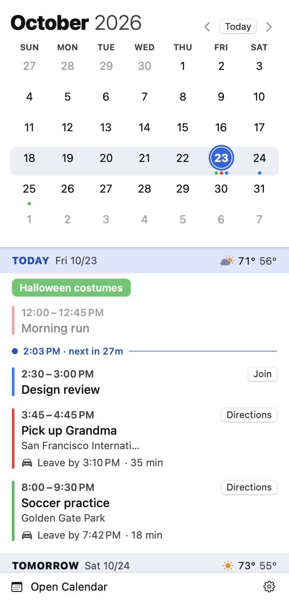

Requirements
- macOS 14 Sonoma or later.
- A Mac with Apple silicon or Intel. Releases are universal.
- Calendars set up in macOS. ForeCal shows what the built-in Calendar app shows. See How it connects to your calendars.
- An internet connection for weather and drive times. Your calendar works offline, as long as macOS has synced it.
To check your macOS version, choose Apple menu › About This Mac.
Install
Download
- Download ForeCal.zip. Older versions are on the releases page.
- Open the zip to unpack ForeCal.
- Drag ForeCal into your Applications folder.
- Open it. macOS asks to confirm you want to open an app downloaded from the internet; click Open. ForeCal is signed and notarized by Apple, so you won't see a security warning.
Build from source
You need Xcode or Apple's Command Line Tools. If you have neither, install the tools (a few minutes, no Apple account needed):
xcode-select --installThen build and install ForeCal:
git clone https://github.com/chuckconway/forecal.git
cd forecal
./build.sh --installThis builds ForeCal.app, copies it to the Applications folder in your home folder, and opens it. To update later, run git pull and ./build.sh --install again.
Builds from source are signed ad hoc, which macOS treats as a new app each time, so it asks for calendar and location access again after every rebuild. The README explains how to avoid that.
First launch
ForeCal is a menu bar app: it doesn't open a window or appear in the Dock. Look for today's date in the menu bar, near the clock, as a small calendar page with the day number. Click it to open ForeCal.
The first time it runs, ForeCal asks for two permissions:
| Permission | Needed for | What to choose |
|---|---|---|
| Calendars | Showing your events. Required. | Allow Full Access. ForeCal only reads; it never changes anything. |
| Location | Weather and drive times. Optional. | Allow, or decline and use ForeCal without weather and drive times. |
To have ForeCal start when you log in, open it, click the gear at the bottom right, and choose Launch at Login.
Don't see the date in the menu bar? On Macs with a notch, a crowded menu bar hides items that don't fit. Quit an app or two with menu bar items, or check System Settings › Menu Bar (macOS 26 and later) and make sure ForeCal is allowed.
How it connects to your calendars
ForeCal doesn't sign in to anything. It reads the calendars macOS already keeps, through Apple's EventKit framework, the same way the built-in Calendar app does. If an event shows in Calendar, it shows in ForeCal.
Add an account
To see a Google, Microsoft 365, Exchange, Yahoo, or other calendar, add the account to macOS:
- Open System Settings › Internet Accounts (or, in Calendar, choose Calendar › Settings › Accounts).
- Click Add Account, pick the provider, and sign in.
- Turn on Calendars for that account.
iCloud calendars appear automatically if you're signed in to iCloud with Calendars turned on. Subscribed calendars (holidays, sports schedules, school calendars) appear too: add them in Calendar with File › New Calendar Subscription.
What ForeCal shows
- Every calendar macOS has, grouped by account. Hide the ones you don't want with Choose Calendars.
- Changes right away. When an event is added or changed, on your Mac or synced from another device, ForeCal updates immediately.
- Events only. Reminders and to-dos aren't shown.
- Declined and canceled meetings are left out of the menu bar status, so it never tells you to join a meeting you said no to.
Read-only
ForeCal never creates, edits, or deletes events. To change something, click Open Calendar at the bottom of the panel.
Using ForeCal

The panel has two parts: a month grid at the top and an agenda below it that scrolls a year back and a year ahead.
| To | Do this |
|---|---|
| Open ForeCal | Click the date in the menu bar. |
| Go to another month | Click ‹ or › next to the month, or scroll the agenda. |
| Go back to today | Click Today. |
| Jump to a day | Click it in the grid. The agenda scrolls to it. |
| See an event's details | Click the event to show its calendar, attendees, notes, and link. Click again to collapse it. |
| Join a video call | Click Join. |
| Get directions | Click Directions to open the route in Maps. |
| Open macOS Calendar | Click Open Calendar. |
Reading the panel
- Dots under a date show which calendars have events that day, in each calendar's color.
- The highlighted week in the grid is the one at the top of the agenda. Scrolling the agenda moves it.
- A ring around a date in the grid means the pointer is over that day in the agenda. Over an event, the ring takes that event's calendar color.
- Day headers stay pinned to the top while you scroll through that day.
- The now line in today's list shows the current time and how long until your next event.
- Dimmed events are over.
- Colored pills at the top of a day are all-day events.
The menu bar status
Next to the date, the menu bar shows what matters right now, so you rarely need to open the panel. It shows one thing at a time, in this order:
| Shows | When |
|---|---|
🚗 Leave in 12m, then 🚗 Leave now | It's within 30 minutes of when you need to leave for an in-person event. |
Design review · 25m, then · now | An event starts within 30 minutes. |
Planning · ends 3:00 PM | You're in an event. Long blocks of 8 hours or more, like "Work" or "Vacation", are skipped. |
| Just the date | Nothing is coming up. |
Long titles are shortened. The status updates every minute, and catches up as soon as your Mac wakes from sleep. Countdowns round up, so "1m" always means the event hasn't started.
Leave-by times
For in-person events in the next 48 hours, ForeCal asks Apple Maps how long the drive is from where you are, with current traffic. The event shows a badge such as Leave by 8:33 AM · 42 min, which turns orange in the hour before you need to leave, and a Directions button.
Which events get one
- Timed events with a location that reads as a place: an address, a business, a landmark. ForeCal looks up the place by name, so a full address is the most reliable.
- Not online events: locations that are links, or that mention Zoom, Teams, Google Meet, Webex, FaceTime, online, virtual, phone, or conference call.
- Not rooms or placeholders: locations mentioning room, TBD, or TBA.
- Only trips between 5 minutes and 4 hours. Shorter means you're already there; longer is usually a flight or a wrong match.
How fresh they are
Drive times refresh every 10 minutes for events starting in the next two hours, and every hour otherwise. They also refresh when you've moved more than 1 km. Leave-by times are rounded down to the minute, so they're never late.
Weather
Each day header in the agenda shows that day's forecast for where you are: an icon, the high, the low, and the chance of rain when it's 30% or more. Forecasts reach 16 days ahead and refresh hourly, or when you've moved more than 5 km. Temperatures are in °F or °C, following your Mac's region settings.
Weather comes from Open-Meteo, a free, open forecast service.
Join buttons
When an event has a video call link in its URL, location, or notes, ForeCal adds a Join button. It recognizes Zoom, Google Meet, Microsoft Teams, Webex, FaceTime, Whereby, Amazon Chime, and GoToMeeting. Join buttons disappear once an event is over.
Settings
Click the gear at the bottom right of the panel.
- Choose Calendars…
- Every calendar, grouped by account. Check or uncheck calendars, or use Show All and Hide All for a whole account. Click Done to return.
- Today Color
- The color that marks today in the grid and agenda: red, blue, or indigo.
- Launch at Login
- Start ForeCal automatically when you log in.
- About ForeCal
- The version, what data leaves your Mac, and a link to the source code.
- Quit ForeCal
- Quits the app. Open it again from your Applications folder.
Light and dark mode follow your Mac's appearance setting.
Privacy and permissions
ForeCal has no server, account, analytics, or tracking. It never uploads your calendars. Two things leave your Mac:
| Sent | To | Why |
|---|---|---|
| Your location, rounded to about 1 km | Open-Meteo | The weather forecast, about once an hour. |
| Your location, and the location text of in-person events in the next 48 hours | Apple Maps | Finding the place and the drive time. |
Event titles, notes, attendees, and everything else stay on your Mac. Turn off Location for ForeCal and nothing leaves at all.
ForeCal runs in Apple's App Sandbox, so macOS itself limits it to your calendars, your location, and the network. It can't read your files or other apps' data.
To change permissions later, open System Settings › Privacy & Security and choose Calendars or Location Services.
Troubleshooting
- The panel says "ForeCal needs calendar access."
- Click Open Privacy Settings in the panel, or go to System Settings › Privacy & Security › Calendars, and set ForeCal to Full Access. "Add Events Only" isn't enough: it doesn't let apps read events.
- A calendar or event is missing.
- Check gear › Choose Calendars to see whether it's hidden. Then check the built-in Calendar app: if it's not there either, the account isn't set up or hasn't synced yet. See How it connects to your calendars.
- There's no weather.
- ForeCal needs your location. Check System Settings › Privacy & Security › Location Services: Location Services must be on, and ForeCal allowed. Your Mac also needs to be online.
- An event has no leave-by time.
- Check that location access is on, the event is timed rather than all-day, starts in the next 48 hours, has a place rather than a call as its location, and is between 5 minutes and 4 hours away by car. If Apple Maps can't find the place, edit the event to use a full street address.
- A drive time looks wrong.
- Apple Maps may have matched a different place with the same name. Use a full street address in the event, or click Directions to see which place it found.
- I can't find ForeCal in the menu bar.
- See the note under First launch. If it's not running, open it from your Applications folder.
- macOS asks for permission after every update.
- That happens with builds from source, which are signed ad hoc. Releases are signed with a stable identity and keep your permissions.
Uninstall
- If you turned on Launch at Login, turn it off first: gear › Launch at Login.
- Quit ForeCal: gear › Quit ForeCal.
- Drag ForeCal from your Applications folder to the Trash.
To also remove its settings and permissions, run these in Terminal. macOS may ask you to let Terminal access data from other apps.
rm -rf ~/Library/Containers/com.cconway.ForeCal
tccutil reset All com.cconway.ForeCalFAQ
- Is it really free?
- Yes. ForeCal is free and open source under the MIT License, with no ads, subscriptions, or tracking.
- Does it work with Google Calendar, Outlook, or Exchange?
- Yes, through macOS. Add the account in System Settings › Internet Accounts and its calendars appear in ForeCal.
- Can I create or edit events?
- No. ForeCal is read-only by design. Click Open Calendar to make changes in the Calendar app.
- Does it show reminders?
- No, only calendar events.
- Does it work offline?
- Your calendar does. Weather and drive times need a connection and fill in when you're back online.
- Will it notify me?
- No. ForeCal never sends notifications; the menu bar status is the heads-up. For alerts, set them on the event in the Calendar app.
- Does it use much battery?
- No. It wakes once a minute to update the status, asks for your location at most every 15 minutes, and fetches weather hourly.
- How do I report a bug or ask for a feature?
- Open an issue on GitHub. Ideas under consideration are in the roadmap.